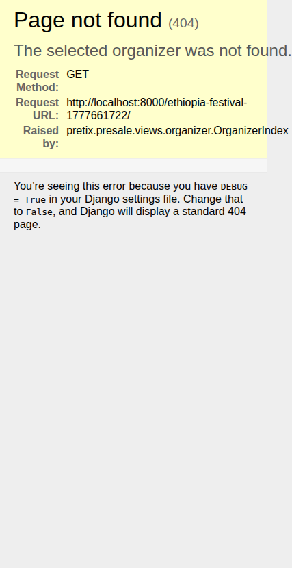
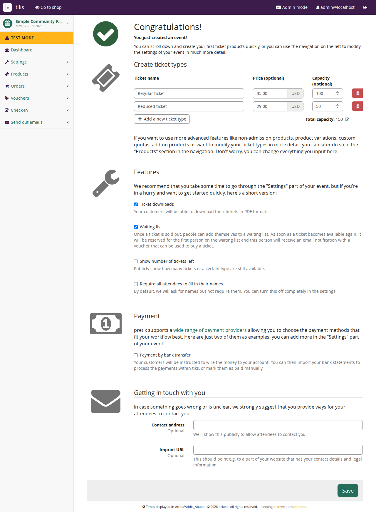
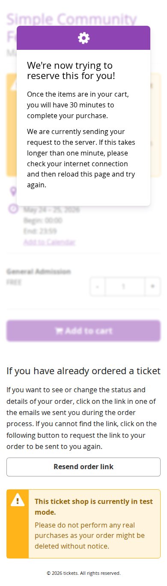
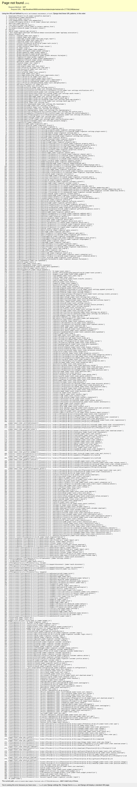
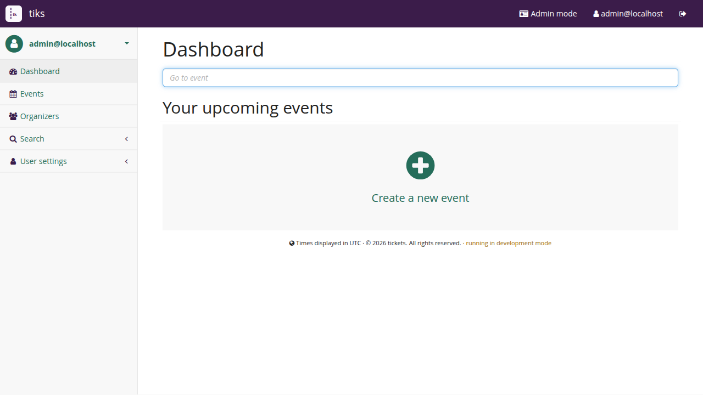

Open the public event page
Use the event link sent by the organizer. Read the event date, location, and ticket descriptions before choosing a ticket.

Plain language operating manual
This guide explains what each person needs to do, where they should click, and what to check before an event goes live.

Choose your job
Use the role links above. A customer sees buying help, an organizer sees event setup help, and an administrator sees system setup help.
Buy tickets, pay, find an order, and bring the ticket to the event.
Create events, tickets, quotas, teams, public pages, and reports.
Manage orders, answer customer questions, and keep one event running.
Use devices and check-in lists to scan tickets at the entrance.
Install tiks, create admins, configure mail, and maintain the server.
Running tiks
This is the shortest working path for a non-technical person helping with setup on a local machine.
./install.sh
Creates the local environment, uses SQLite, writes config, and runs the database setup.
make run-local
Starts tiks at http://localhost:8000/control/.
make createsuperuser-local
Creates the account that can log in and create organizers.
Customer guide
Customers do not need the control panel. They only use the public event page, checkout, email, and order lookup.
Use the event link sent by the organizer. Read the event date, location, and ticket descriptions before choosing a ticket.

Use the plus and minus controls beside each ticket. If a ticket is unavailable, check whether another category or date is open.
Fill in required fields carefully. The email address is important because tiks sends the order confirmation and ticket there.

Bring the QR code on a phone or as a printed ticket. At the entrance, check-in staff scan it once.
Organizer guide
Organizers control the event setup, ticket products, teams, public pages, and sales reports for their organization.
From the control panel, create an organizer if needed, then add an event name, slug, date, timezone, and currency.
A product is what the customer buys. A quota is the limit that prevents overselling. Always attach every ticket product to a quota.
Make sure customers can pay and receive confirmation emails. For a test event, place a small test order before publishing.
Review the public page, test checkout, check ticket limits, then take the shop live and share the event link.
Event staff guide
Event staff usually work inside one event. They should see only the organizer or event areas they are assigned to.
Use the order list and search by customer name, email, or order code.
Use order detail actions for refunds, resend emails, attendee changes, or cancellations if your permissions allow it.
Review dashboard numbers and quota usage before sending customers to buy more tickets.
If payment, tax, or access rules are unclear, ask the organizer or administrator before changing settings.
Check-in guide
Check-in staff need clear lists, connected devices, and a simple rule: scan each valid ticket once.
The organizer prepares the list. Use the correct list for the event entrance, date, or gate.
Use the device page to connect scanner devices and assign them to the right organizer or event.

Green means allow entry. A duplicate, blocked, or unknown result means stop and ask the entrance lead to review the order.
Administrator guide
Administrators manage the full installation. This guide is not shown from customer pages.
Use the first admin account created during setup. Keep this account protected and do not share it with event staff.

Set the public URL, email sending, database, timezone, and HTTPS reverse proxy before real ticket sales.
Give each organizer only the permissions they need. Use teams for event staff and check-in workers.
Back up the database and media files, monitor logs, keep dependencies updated, and test email/payment flows after changes.
Before going live
Event name, date, location, and ticket text are correct.
A complete order can be created and the confirmation email arrives.
Every product has a quota and the numbers match the venue plan.
Lists and devices are prepared before customers arrive.